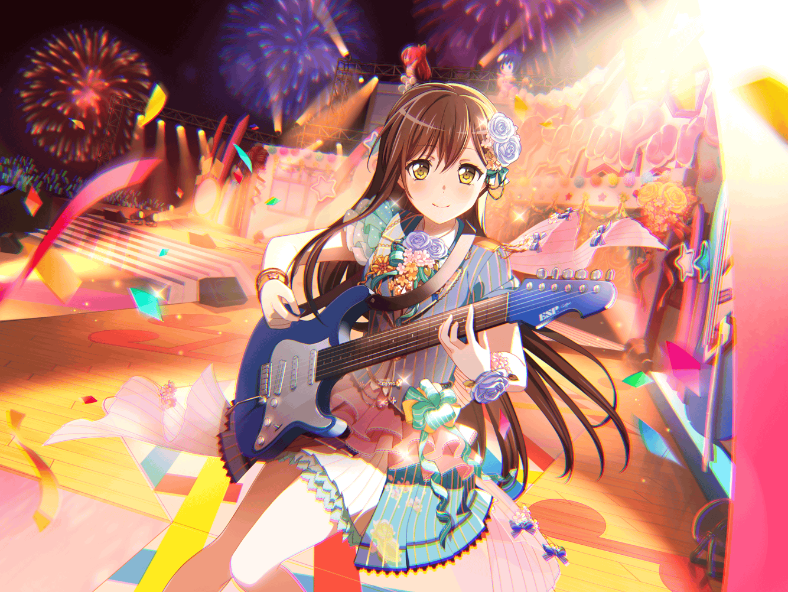

たえ
……あ
たえ
{{userName}}さん、見つけた
たえ
うん。おはよう
たえ
もしかして待たせた？
たえ
大丈夫？ 待ってない？
それならよかった
たえ
なにか飲む？
私は……ココアにする
たえ
あなたは？
たえ
わかった。注文するね
たえ
……すみません。
ココアと……これ。お願いします
たえ
ふぅ。……えっと
たえ
この前言ってたＣＤと、私のおすすめのやつ
たえ
聴いたら、感想教えて
たえ
あなたが言ってたのは？ それ？
たえ
ん。ありがと
たえ
家に帰ったら聴いてみる。すごく楽しみ
たえ
あなたは、こういうジャンルがすきなの？
たえ
他にもいろいろ聴くんだ？
たえ
私もあなたと一緒で
いろんなの聴くよ
たえ
だからオススメ教えてもらえるの嬉しい。
私の知らない音楽を知れるから
たえ
幸せな時間がたくさん
たえ
……幸せといえば、
この前、レコードショップに行ったんだ
たえ
すきなバンドの新譜発売日だったから
たえ
買った後、他のお店もみてみたの。
楽器屋さんとか、古いレコード屋さんとか
たえ
試聴したり、音楽雑誌を探したり……
たえ
で、ひとりだったのが
いつの間にか３人になってた
たえ
誰が増えたと思う？
たえ
香澄と有咲。ふたりとばったり
たえ
帰り道で私を見つけて、気になったから
ついてきたんだって
たえ
私、つけられてるの全然気づかなかった。
ふたりとも尾行すごくうまい。探偵になれるかも
たえ
で、ふたりの顔を見ておどろいたけど、
すぐに嬉しくなって……
たえ
香澄と有咲が好きそうなバンドを
一緒に探したんだ
たえ
なにがいいかなーって
３人でお店の中をぐるぐるしてた
たえ
どんなのがいいのか、絶対に見つけたいって思って
たえ
その日は、
幸せな時間を３人で共有することができた感じ……
たえ
ああいうの初めてだったから、
なんだか新鮮な気持ちだったかな
たえ
また一緒に行こうって約束した
たえ
学校や、練習の時だけじゃなくて、
もっといっぱいみんなとの時間を増やしたいな
たえ
３人でいたとき、すごく幸せだったから
たえ
……いまのはみんなには内緒。
ちょっと恥ずかしいから
たえ
あなたと私との約束
たえ
……うん？
バンドなら順調。問題なし
たえ
今日もみんなと練習するから
たえ
今、新しい曲を考えてるところ
たえ
……聴きたい？
たえ
ん……
いつか、私たちの曲がＣＤになったら……
たえ
あなたにも聴いてほしいな
たえ
これも約束しておく？
たえ
ふたつ目の約束
たえ
ひとつ目は秘密の約束で、ふたつ目は叶える約束
たえ
絶対に叶えるから、あなたも楽しみにしてて
たえ
絶対だよ